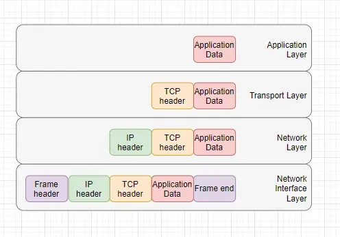
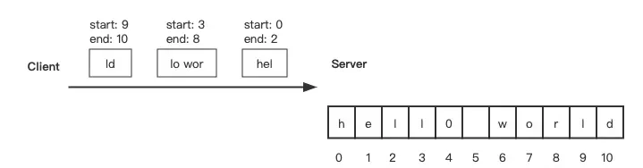

2024-07-18 11:44:12 · YinHao
在讨论前端 JS 发起的请求是否能暂停时，需要明确两个概念：什么状态可以被认为是“暂停”？以及什么是 JS 发起的请求？
暂停指的是临时停止一个已经开始但尚未完成的过程。这意味着这个过程可以在某个时间点被中断，并在另一个时间点恢复。
首先，让我们介绍一下 TCP/IP 网络模型。网络模型从上到下分为应用层、传输层、网络层和网络接口层。
上图表示，每次网络传输，应用数据都需要通过网络模型逐层打包，然后发送到目的地，就像寄包裹一样。要寄送的物品首先被包装并登记其大小，然后放入箱子并登记目的地，最后装上运输工具送到目的地。
请求的概念可以理解为客户端通过多次数据网络传输将完整数据发送到服务器，而服务器为特定请求返回的数据可以称为响应。
理论上，应用层协议可以通过标记数据包序列号来实现暂停机制。然而，TCP 协议不支持这一点。TCP 协议的数据传输是面向流的，数据被视为连续的字节流。客户端发送的数据将被分成多个独立传输的 TCP 段。无法直接控制每个 TCP 段的传输，因此无法实现暂停请求或响应的功能。
如果请求指的是网络模型中的传输，那么自然是不可能暂停的。
考虑到使用场景——由 JS 发起的请求。因此，可以认为这里的问题指的是在 JS 运行时发起的XMLHttpRequest或fetch请求。由于请求已经发出，问题自然变成响应是否可以暂停。
我们都知道，上传大文件分片和下载大文件本质上是定义分片顺序，按顺序请求，可以通过中断和记录中断点来实现暂停和恢复。然而，单个请求并没有这样的环境。
虽然我们无法真正实现暂停请求，但我们可以模拟一个假暂停功能。在前端业务场景中，数据在接收到后不会立即显示在客户端。前端开发人员需要先处理这些数据，然后再渲染到界面上。如果我们在发起请求前添加一个控制器，并且在请求返回时该控制器处于暂停状态，则不处理数据。相反，等待控制器恢复后再处理数据。这样我们是否就达到了目标呢？让我们尝试实现它。
如果我们使用 fetch 发起请求，可以设计一个控制器 Promise，并结合请求使用 Promise.all 封装。当 fetch 完成时，检查控制器是否处于暂停状态；如果没有暂停，直接resolve 控制器并同时 resolve 和抛出 Promise.all。
function _request() {
return new Promise<number>((res) =>
setTimeout(() => {
res(123);
}, 3000)
);
}
// 原本想用 "class extends Promise" 实现。
// 问题在于https://github.com/nodejs/node/issues/13678。
function createPauseControllerPromise() {
const result = {
isPause: false,
resolveWhenResume: false,
resolve(value?: any) {},
pause() {
this.isPause = true;
},
resume() {
if (!this.isPause) return;
this.isPause = false;
if (this.resolveWhenResume) {
this.resolve();
}
},
promise: Promise.resolve(),
};
const promise = new Promise<void>((res) => {
result.resolve = res;
});
result.promise = promise;
return result;
}
function requestWithPauseControl<T extends () => Promise<any>>(request: T) {
const controller = createPauseControllerPromise();
const controlRequest = request().then((data) => {
if (!controller.isPause) controller.resolve();
controller.resolveWhenResume = controller.isPause;
return data;
});
const result = Promise.all([controlRequest, controller.promise]).then(
(data) => data[0]
);
result.finally(() => controller.resolve())(result as any).pause =
controller.pause.bind(controller);
(result as any).resume = controller.resume.bind(controller);
return result as ReturnType<T> & { pause: () => void; resume: () => void };
}
我们可以将调用 _request 替换为调用 requestWithPauseControl(_request) ，并通过返回的pause和 resume 方法控制暂停和恢复。
const result = requestWithPauseControl(_request).then((data) => {
console.log(data);
});
if (Math.random() > 0.5) {
result.pause();
}
setTimeout(() => {
result.resume();
}, 4000);
在流程设计上，步骤如下：设计一个控制器，发起请求，在接收到响应后，检查控制器的状态。如果控制器不处于“暂停”状态，则正常返回数据；如果控制器处于“暂停”状态，则将控制器设置为一旦调用 resume 方法就返回数据的状态。
在代码中，使用 Promise.all 将控制器 Promise 绑定。如果控制器处于暂停状态，Promise.all 不会被释放。然后对应地暴露 pause 方法和 resume 方法供外部使用。